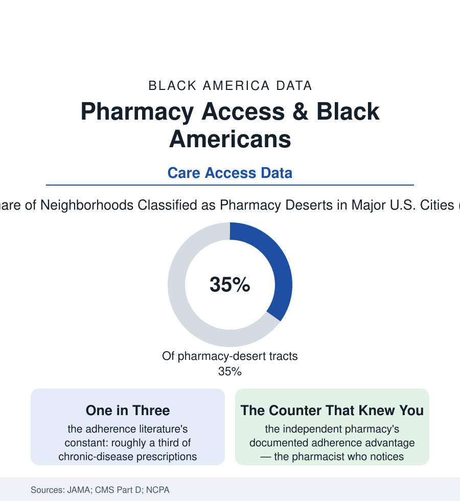

Black Public Health
The Last Mile of the Prescription: Pharmacy Access and the Adherence Gap
The prescription is written — then the data follow it to the pharmacy counter, where deserts, copays, and closures decide whether the medicine ever gets taken. The pharmacy access file.

Every prescription in this section's hundred articles ends the same way: at a pharmacy counter, where a patient decides — under the pressure of price, distance, and time — whether the plan becomes treatment. Black Americans make that decision in a landscape the access studies have now mapped in detail: neighborhoods measurably likelier to be 'pharmacy deserts,' closures concentrating where independents once anchored, and adherence statistics that record the result in refills never made. This article reads the last-mile file.
The Desert and the Closure Map
The pharmacy desert is the food desert's twin, measured the same way — a low-income neighborhood more than a mile from a pharmacy in the city studies' definition — and its geography is the atlas's: the JAMA-published analyses of the largest cities finding Black and Latino neighborhoods substantially likelier to qualify, their pharmacy counts per capita thinner, their independents more fragile. The closure data write the trend's motion: the University of Pittsburgh's pharmacy-closure research tracking thousands of closures across the recent decades, the net loss concentrated in the Black and low-income urban tracts (the independents dying of the reimbursement file's arithmetic — the pharmacy benefit managers' below-cost reimbursements in the trade and litigation record — where the chains' departures for the suburbs complete the map), until the counter that remains is a bus ride and a transfer from the senior whose hypertension file depends on it. The consequences enter the adherence data on schedule: the distance-to-pharmacy studies finding refill rates decaying with every added mile for the carless, the mail-order alternative sorting by the housing file (the porch, the mailbox security, the address stability the delivery model presumes), the 90-day and synchronization programs reaching, in the Part D plan data, the enrolled-and-stable first. And the pharmacist herself is the file's underused asset in the workforce counts: the most accessible clinician in the American system (no appointment, no copay for counsel, ninety percent of the population within a few miles in the industry's own geography — except, the desert studies add, the populations of this atlas), her scope of practice expanding in the state law data (the vaccinations, the testing, the contraception and naloxone authorities) precisely as her urban storefronts thin.
Adherence: The Behavior the System Designs
The adherence numbers are medicine's confession: for the chronic diseases that dominate this section — the pressure, the glucose, the cholesterol — the proportion of days covered by medication, in the claims data, runs lower for Black patients across drug class after drug class, and the causes the research assigns are only partly the patient's: the copay file (the value-based insurance experiments showing adherence rising measurably when the copay falls to zero for the maintenance drugs — the price elasticity of survival, published and then largely unadopted), the regimen complexity the prescribers build (the twice-daily, three-bottle schedules against the once-daily combinations the formularies resist), the side-effect conversations never held (the pain file's communication data at the pharmacy counter), the refill friction of the desert map itself. The interventions with evidence read like the section's other successes — unglamorous and structural: the pharmacist-led management programs in the safety-net systems (the barber-shop trial's pharmacist, transplanted to the clinic and the counter, with the same effect sizes), the med-sync and blister-pack services of the surviving independents, the community-health-worker refill rounds of the home-visiting file. The adherence gap, like the rest of this atlas, resolves under inspection from a story about patients into a story about systems: the medicine works when it is taken, it is taken when it is reachable, affordable, and explained — three variables with addresses, prices, and payrolls attached.
Reading the Pharmacy Data
The prescription is a promise with a supply chain, and its last mile runs through the neighborhoods this atlas maps. The closure studies publish their counts; the adherence claims publish their percentages; between them stands a counter that used to be on the corner. Rebuilding it — or learning, honestly, what replaces it — is the difference between the medicine prescribed and the medicine taken, which is to say, between this section's intentions and its outcomes. The distance is short on the map. It is the longest mile in the health system.
More in Black Public Health
Hypertension Among Black Adults: Prevalence, Control, and Consequences
About 55 percent of Black adults have hypertension — the highest rate of any U.S. group. Prevalence, onset, control, and the stroke, heart, and kidney consequences in the data.
Diabetes Among Black Adults: Prevalence and Complications
Nearly one in five Black adults has diabetes, diagnosed or undiagnosed — and its complications fall with particular weight. The CDC data on prevalence, control, and outcomes.
Black Life Expectancy: The Gap at Birth and Its Causes
Black life expectancy at birth is about 73 years, roughly five years below the national figure — the summary measure of every health gap in this section. The CDC data.
Source: Journal of the American Medical Association pharmacy-access studies; Centers for Medicare & Medicaid Services Part D data; National Community Pharmacists Association; University of Pittsburgh pharmacy closure research.